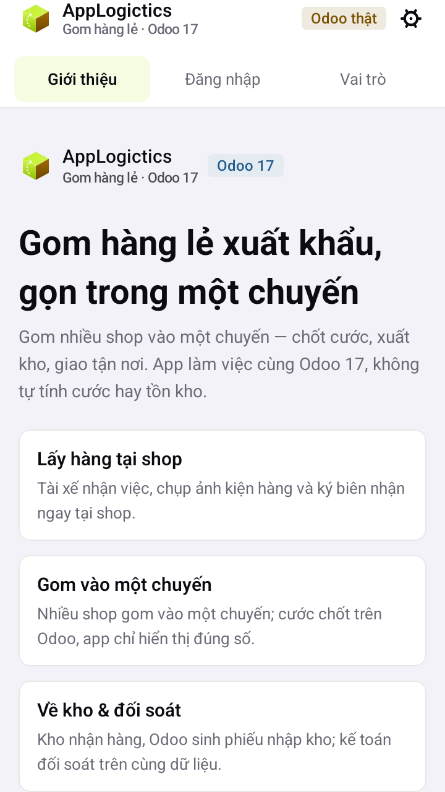
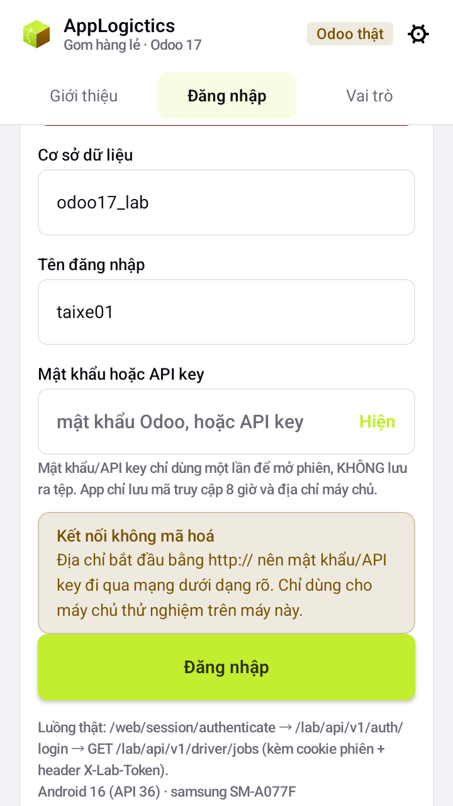
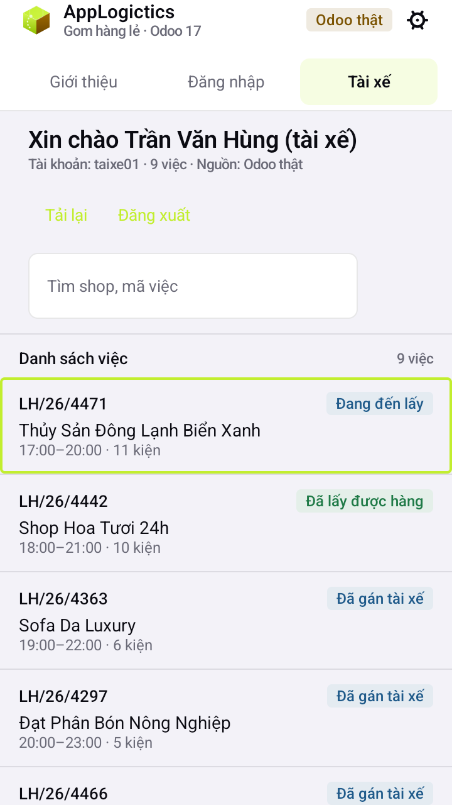

Hàng chưa rõ khách
Vào: hàng đã rời kho nhưng hải quan giữ; mốc hành trình đứng ở “đang đi”.
Về: khai xong thì đóng mốc ⑨, hành trình chạy tiếp, chuyến giữ nguyên.
lab.hanh.trinh · stock.picking
AppLogistics là hệ thống gom hàng lẻ xuất khẩu: 19 bước nghiệp vụ đi qua 6 phòng ban, mỗi kiện có ảnh chụp, chữ ký và bút toán. Backend Odoo 17 CE, app Kotlin Multiplatform cho tài xế ngoài đường.
Web: cs01 / kho01 / manager01 … mật khẩu lab@2026. App tài xế/kho chạy riêng trên Android.
19 bước nghiệp vụ 6 phòng ban 6 nhánh ngoại lệ

Mười pha, mười chín bước. Mười bước chạy bằng model có sẵn của Odoo, ba bước chỉ cấu hình, sáu bước phải viết code. Cột phải là chứng từ sinh ra ở bước đó — không phải màn hình giả.
Shop nhắn đơn, sale báo giá và xác nhận. Hội thoại nằm trong chatter của đơn, không trôi trong Zalo.
CS tạo yêu cầu và gán tài xế. Tài xế chụp ảnh, ký biên nhận, đếm số kiện trên app — mất mạng vẫn làm được.
Kho bấm “Nhận hàng” là Odoo sinh phiếu nhập kho; sau đó cân, đo, dán mã kiện. Một nguồn số liệu duy nhất cho mọi bước sau.
Kiện được gom vào gói và gắn mã kiện — mã này theo hàng tới tận đại lý nước ngoài.
Nhiều đơn của nhiều shop vào một chuyến bay hoặc chuyến tàu. Đơn vào chuyến phải qua duyệt hai cấp.
Xuất kho lên chuyến; AWB, HBL và manifest in từ chính dữ liệu chuyến — không nhập lại lần hai.
Hàng đã rời kho vẫn theo được: đang đi, đến kho đối tác, đại lý giao khách — mỗi mốc có biên nhận.
Cước theo kg tính trên bảng giá bậc thang; Debit là account.move trên journal riêng — mọi sự kiện kinh tế đều có bút toán.
Debit bị khoá sau khi duyệt; hoá đơn, thu tiền, đối soát ngân hàng, khoá tháng. Sửa sau khoá phải có người duyệt và lý do.
Ban giám đốc mở một trang: doanh thu, sản lượng, chuyến đang chạy, ngoại lệ còn mở.
Đếm đủ 19: mười sáu bước có số ①→⑯ cộng ba bước không số trên sơ đồ gốc (tài xế đi lấy hàng · cân–đo–dán mã kiện · báo cáo). Ba bước đó đã nằm đúng pha của nó.
Chụp từ app Android đang chạy trên máy thật (Samsung), cùng codebase Kotlin Multiplatform với bản desktop, cùng gọi API của Odoo. Ảnh dưới là app đang nối Odoo thật — công tắc nguồn dữ liệu trong app bật “Odoo thật”, danh sách việc lấy từ DB odoo17_lab, không phải dữ liệu mẫu.
Một app, ba lối vào. Tài xế chỉ thấy việc của mình, không phải mở backend Odoo.
Thật ở chỗ: tab Giới thiệu · Đăng nhập · Vai trò, không phải ảnh trang trí.

Trỏ vào Odoo thật bằng địa chỉ máy chủ và tên cơ sở dữ liệu; công tắc đổi giữa dữ liệu mẫu và DB thật.
Đủ bốn trạng thái: form trống, đang tải, lỗi, thành công — không có màn hình “đang cập nhật”.

Mã việc, shop, địa chỉ, người liên hệ, khung giờ hẹn và trạng thái. Đủ để đi lấy hàng mà không gọi điện hỏi lại.
Thật ở chỗ: LH/26/4471 — mã lấy từ sequence của lab_laixe.
CS gán việc trên backend. Tài xế mở app, chụp ảnh, ký, nhập số kiện — app gửi kèm một clientUuid nên bấm gửi hai lần không sinh hai bộ ảnh. Kho bấm “Nhận hàng”, Odoo sinh stock.picking: hàng đã vào kho và mọi sự kiện kinh tế đã có bút toán.
Đây là cảnh quay chính của video demo. Chống trùng nằm ở phía server (addons/lab_api/controllers/driver.py): gửi lại cùng clientUuid thì trả về bản ghi cũ thay vì tạo bộ ảnh thứ hai — test_capture_gui_lai_khong_tao_anh_thu_hai giữ đúng hành vi đó.
Ngoại lệ không được tạo luồng song song vĩnh viễn. Mỗi nhánh dưới đây có một đường vào, một điểm quay về, và một test chứng minh nó quay về được.
Vào: hàng đã rời kho nhưng hải quan giữ; mốc hành trình đứng ở “đang đi”.
Về: khai xong thì đóng mốc ⑨, hành trình chạy tiếp, chuyến giữ nguyên.
lab.hanh.trinh · stock.picking
Vào: hãng dồn hoặc huỷ chuyến, kiện đã nằm trong chuyến.
Về: dòng hàng chuyển sang chờ chuyến (waitlist), gán chuyến khác — không xoá dòng, không mất dấu vết.
lab.chuyen · base_tier_validation
Vào: chưa có AWB/HBL trước giờ chốt chuyến.
Về: hoạt động nhắc việc gán cho CS; đóng hoạt động là đơn được duyệt vào chuyến ⑥.
mail.activity
Vào: tải vượt 100% — chuyến CH/AIR VN-2026-0001 trong seed đang ở 120%.
Về: đề xuất giảm tải, trưởng nhóm duyệt, đơn gỡ ra về trạng thái chờ chuyến sau.
lab.chuyen + tier duyệt hai cấp
Vào: shop đổi địa chỉ sau khi tài xế đã nhận việc.
Về: sửa địa chỉ trên res.partner rồi phát lại yêu cầu lấy hàng — app gửi kèm clientUuid mới nên không sinh việc trùng.
lab_laixe · res.partner
Vào: khách nhận hàng và báo hỏng.
Về: mở ticket, kho kiểm, lập phiếu xuất trả, đóng ticket kèm credit note nếu đã gửi hoá đơn.
helpdesk_mgmt · stock.picking (return)
Những con số dưới đây đếm từ chính repo này, không phải ước lượng cho đẹp. Đếm lại được bằng cách mở đúng thư mục ghi bên cạnh.
69 + 66 = 135 test, tất cả chạy offline trên máy. Phần phải viết code chỉ là sáu bước; mười bước dùng model Odoo có sẵn và ba bước chỉ cấu hình — đó là lý do bộ test còn đọc được.
Chọn chuyến, số shop, số kiện và cân nặng. Kg tính cước theo đúng luật của hệ thống: lấy số lớn hơn giữa kg thực và kg thể tích, hệ số 6000 cho đường bay, 1000 cho đường biển. Tải trọng và đơn giá lấy từ seed data thật trong repo.
| Chuyến | Hãng | Tải trọng | Đã gom | Tỉ lệ tải |
|---|---|---|---|---|
| CH/AIR · VN-2026-0001 | Vietnam Airlines | 1.000 kg · 12 m³ | 1.200 kg · 4,5 m³ | 120% · quá tải |
| CH/SEA · MAE-2026-0007 | Maersk | 5.000 kg · 40 m³ | 1.400 kg · 5,6 m³ | 28% · còn chỗ |
Máy tính cần JavaScript để chạy. Bảng trên là dữ liệu chuyến thật, đọc được khi JS tắt.